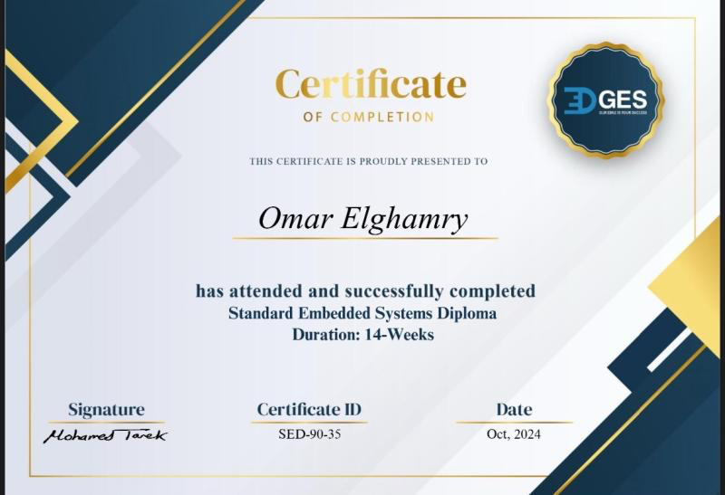

Summary
Motivated Computer Science student aspiring to become a full-stack software engineer with expertise in backend .NET
development and AI/ML integration. Skilled in C#, C, C++, Python, embedded systems, OOP, and data structures, with a
passion for combining software and hardware to develop innovative AI-driven solutions.
Education
- Bachelor’s Degree in Computer Science - Misr University for Science and Technology
- Department: Computer Science (GPA: 3.85)
- Expected Graduation: 2026
Projects
- Recipe Master (C#): 🔗 View Project - Developed a recipe management application using C# while implementing SOLID principles and design patterns.
- Dual Microcontroller-Based Door Locker Security System: 🔗 View Project - Built a secure door control system with password protection using two microcontrollers.
- Smart Home Automation System: 🔗 View Project - Designed an ATmega32-based system to control lighting, temperature, and fire detection.
- Connect4 Game (Python): 🔗 View Project - Created an AI-driven Connect4 game using minimax and alpha-beta pruning algorithms.
- Web Scraping for YALLA KORA (Python): 🔗 View Project - Scraped and organized football data into CSV format using Python libraries.
- Student Management System (C): 🔗 View Project - Developed a C program to manage student data efficiently, supporting basic CRUD operations.
- Car Parking Sensor Using ATmega32: 🔗 View Project - Designed a parking sensor system with ultrasonic sensors for obstacle detection.
- System Management Application (C++, OOP): 🔗 View Project - Built a console-based system to manage students, teachers, and courses.
- ATM Project (Python, OOP): 🔗 View Project - Simulated an ATM in Python with Object-Oriented Programming principles to handle banking functions.
Courses
-
Ultimate C# Masterclass (Udemy, 2025 - In Progress):
47+ hours covering C# fundamentals, advanced topics, design patterns, and unit testing.
-
Embedded Systems Diploma (Edges for Training, 2024):
AVR microcontroller interfacing, RTOS, software engineering principles.

-
Mastering Data Structures & Algorithms in C++ (Udemy, 2025):
In-depth exploration of data structures and algorithms with 96+ coding challenges.

Technical Skills
- Programming Languages: C, C++, C#, Python, Embedded C
- Backend Development: .NET (ASP.NET, Entity Framework)
- Embedded Systems: ATmega32, AVR, ARM, Peripheral driver development, Microcontroller programming, RTOS, AUTOSAR
- Tools & Platforms: Git, Visual Studio, Visual Studio Code, Proteus
- Concepts: OOP, Data Structures, Algorithm Design, SOLID Principles, Design Patterns
- Data Science (Basic): NumPy, Pandas
Languages
- Arabic: Native - Full working proficiency
- English: Highly proficient in speaking and writing